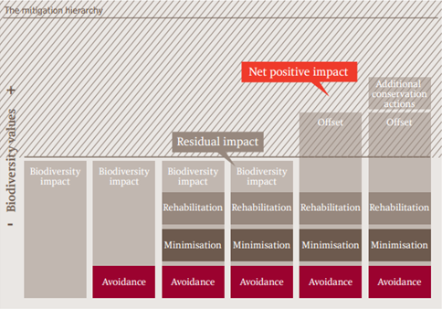
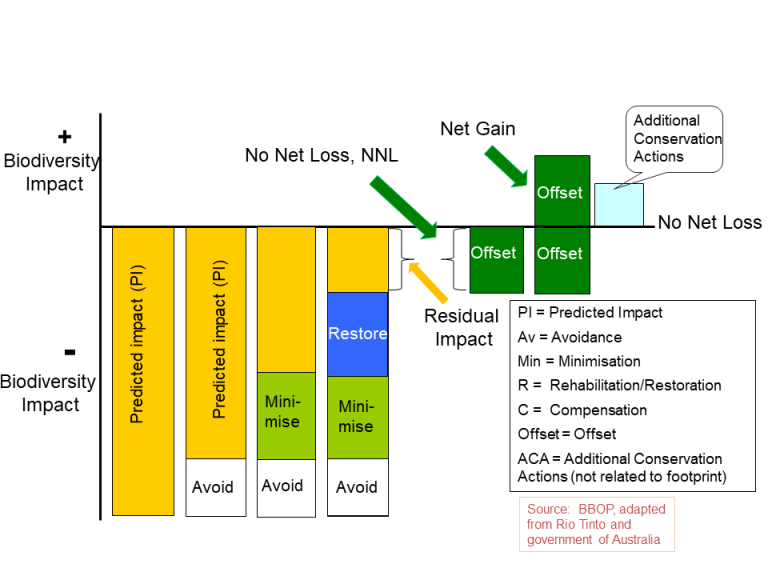
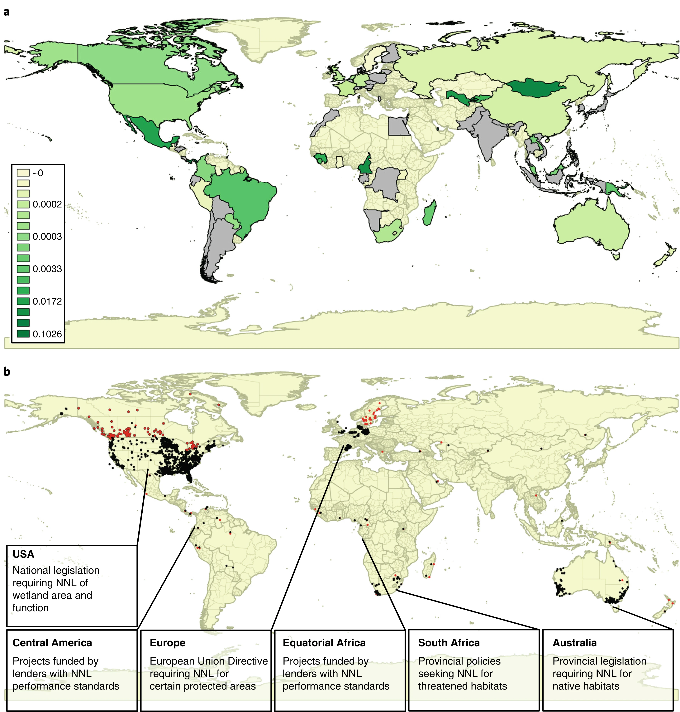

![]()
Ten years ago, in my master’s thesis, I explored the concept of biodiversity offsetting and its potential as a conservation strategy in the context of the perceived success of market-based instruments for carbon. To be honest, I was probably most chuffed about the title: Can biodiversity offsetting follow in carbon’s footprints?

Amid renewed interest in biodiversity offsets and credits (essentially the same thing), I reread (ahem, skimmed) it and I feel a lot of the arguments are still relevant ten years later. In 2012, I concluded that:
Biodiversity offsets are designed to neutralise residual impacts, and it seems that the policy of biodiversity offsetting seems destined to provide a similarly residual contribution to more effective global conservation policies.
In the next few blog posts I’ll revisit some of the arguments supporting this conclusion and test them against ten years of further evidence to see whether a master’s dissertation in 2023 would agree: are offsets ineffective?
Defining biodiversity offsetting
Biodiversity offsetting can be summarized in three words: no net loss. It originated from an American policy that aimed to counter the alarming decline of wetlands in the country. In this first blog post, we’ll cover the basics of biodiversity offsetting, discuss its key principles, and explore different offset mechanisms.
The term “biodiversity offsets” refers to measurable conservation outcomes aimed at compensating for significant adverse impacts on biodiversity resulting from development projects. These offsets come into play after appropriate prevention and mitigation measures have been implemented. The primary goal of biodiversity offsets is to achieve no net loss, and ideally, a net gain in biodiversity on the ground. This encompasses various aspects, including species composition, habitat structure, ecosystem function, and the cultural values associated with biodiversity (Business and Biodiversity Offsets Programme (BBOP) 2012).
Mitigation hierarchy: ensuring responsible offsetting
A crucial aspect of biodiversity offsetting is the concept of the mitigation hierarchy. This hierarchy serves as a guideline to prevent offsetting from becoming a “license to destroy”. According to this principle, offsets should only be utilized to compensate for genuinely unavoidable damage. To determine unavoidable impacts, options must be thoroughly explored to first avoid, minimize, or rehabilitate/restore the affected ecosystems (Lawton et al. 2010). The mitigation hierarchy comprises the following principles (Business and Biodiversity Offsets Programme (BBOP) 2012):
- Avoidance: Measures taken to prevent impacts by carefully considering the spatial or temporal placement of infrastructure elements, thus completely avoiding harm to specific components of biodiversity.
- Minimization: Actions aimed at reducing the duration, intensity, and extent of impacts that cannot be entirely avoided, to the extent practically feasible.
- Rehabilitation/Restoration: Efforts to restore degraded ecosystems or rehabilitate cleared ecosystems after exposure to impacts that could not be completely avoided or minimized.
- Offset: Measures undertaken to compensate for any residual significant adverse impacts that could not be avoided, minimized, rehabilitated, or restored. The goal is to achieve no net loss or even a net gain of biodiversity. Offsets can take the form of positive management interventions, such as restoring degraded habitats or protecting areas facing imminent or projected biodiversity loss.
- 
- The mitigation hierarchy. Source: Rio Tinto.
- 
- The new and improved mitigation hierarchy. Source: Forest Trends.
As an example, say we were building some infrastructure on some natural land. Firstly, we might avoid impacting some ancient oak trees by building a slightly more indirect access road. Secondly, we could minimise impacts by timing works to avoid the bird breeding season, and not work at night under lights to protect nocturnal species. After construction is complete, we would restore the access road to its original condition. If an offset policy were in place, we would then look to compensate for any residual impacts.
Exploring offset mechanisms:

Biodiversity offset mechanisms can vary in their approach. Figure 1 illustrates three examples of offsetting mechanisms, highlighting their relative strengths and weaknesses (Madsen, Carroll, and Moore Brands 2010). These mechanisms provide a range of options for achieving biodiversity conservation goals through compensation.
The role of reports and guidelines
Over the past decade, several reports have fueled interest in biodiversity offsetting as a conservation measure, particularly within the European Union. Key reports include TEEB, eftec and IEEP’s technical report for the EC, and Treweek Consultants’ scoping report for Defra. These reports have shed light on the potential of biodiversity offsetting to deliver effective compensation for biodiversity loss (TEEB 2010; eftec and IEEP 2010; Treweek 2009). In line with this, the BBOP released guidelines and standards for biodiversity offsetting, aiming to refine the measures further based on public consultation (Business and Biodiversity Offsets Programme (BBOP) 2012).
Conclusion
Biodiversity offsetting offers a promising approach to mitigate the adverse impacts of development projects on biodiversity. By adhering to the mitigation hierarchy and implementing effective offset mechanisms, we can strive for no net loss and even a net gain in biodiversity. As guidelines and standards continue to evolve, biodiversity offsetting holds the potential to become a more efficient tool in compensating for biodiversity loss. By embracing this approach, we can contribute to the preservation and enhancement of our precious natural heritage.
References
Citation
@online{dunnett2023,
author = {Dunnett, Seb},
title = {Biodiversity Offsets Pt 1: An Introduction},
date = {2023-06-26},
url = {https://sebdunnett.com/posts/2023-06-26-offsets-pt1/},
langid = {en}
}